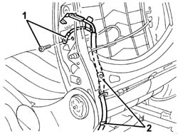
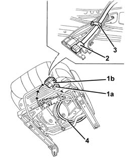
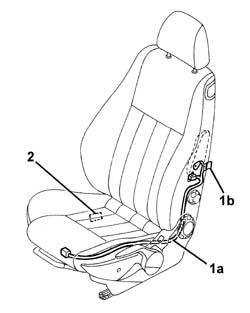
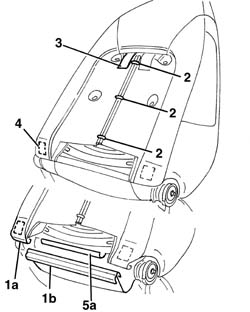
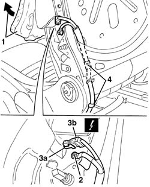
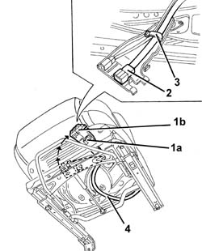
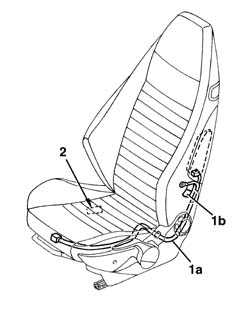

5580C86 side bag wiring harness (one) lh or rh - r r or replace
- Path
- Procedures > 55 ELECTRICAL EQUIPMENT > 5580 SPECIAL ACCESSORIES > 5580C air bag system > 5580C86 side bag wiring harness (one) lh or rh - r r or replace
- Kind
- repair procedure (removal / refitting; the operation number is the code)
- Applies to
- all engines; all production periods
- Interactive page
- https://sloeber94.github.io/elrnDB-a147/en/#/3025618
Applies to: all engines; all production periods
Applies to: all engines; all production periods
 Removing
Removing
 Refitting
Refitting7045A10 l/h or r/h front seat (one) - r+r
7045A25 squab lumbar knob - r r
7045A84 Front set BACKREST COVER - R.R. with seat removed
5580C44 front side bag module one lh or rh r r
1. Disconnect the electrical earth connection.
2. Disconnect the wiring retaining bands.

Applies to: all engines; all production periods
1. Working under the seat, disconnect the retainer (1a) and rotate the connector holder bracket (1b) in an accessible position.
2. Disconnect the connector from the rail-type retainer
3. Disconnect the wiring from the retainer.
4. Remove the Side Bag cable loom.

Applies to: all engines; all production periods
Refitting
RemovingCheck that the wiring is intact and shows no signs of damage.
If a new wiring is being fitted, attach the labels as described below.
1. Detach the removable part (1b) of the adhesive label from the new wiring (1a). Place a copy of the label (1b) in a specific file containing the vehicle details (model, registration data, chassis number) and the serial number of the old backrest cover. This file should be kept for future checks.
2. Apply the original label (1b) to the inner part at the bottom of the seat, where there are already the equivalent labels for seat, side Air Bag module and backrest cover.

Applies to: all engines; all production periods
Position the wiring on the frame and secure it using the retaining bands.
Connect the connector to the rail-type retainer.
Turn the connector carrier bracket in its seat and engage the retainer.
Connect the electrical earth connection to the frame.
5580C44 front side bag module one lh or rh r r
7045A84 Front set BACKREST COVER - R.R. with seat removed
Applies to: all engines; all production periods
Applies to: all engines; all production periods; only with equipment: GTA
Removing
Refitting7045A10 l/h or r/h front seat (one) - r+r
7045A25 squab lumbar knob - r r
7045A98 front seat rear pouch panel, lh or rh - r r
1. Release the lower end (1a) of the backrest cover from the attachment profile (1b).
2. Using cutters, cut the rear retaining hooks on the squab cover.
3. Release the velcro retainer.
4. Detach the adhesive retainer securing the upholstery to the metal structure.
5. Release the front profile (1b) for the backrest cover from the metal structure retainer (5a).

Applies to: all engines; all production periods; only with equipment: GTA
1. Move the backrest cover and upholstery slightly.
2. Disconnect the electrical earth connection.
3. Lift the safety retainer (3a) then disconnect the electrical connection (3b).
4. Release the wiring from the retaining bands.

Applies to: all engines; all production periods; only with equipment: GTA
1. Working under the seat, disconnect the retainer (1a) and rotate the connector holder bracket (1b) in an accessible position.
2. Disconnect the Air Bag connector from the retainer.
3. Disconnect the wiring from the retainer.
4. Remove the Side Bag cable loom.

Applies to: all engines; all production periods; only with equipment: GTA
Refitting
RemovingCheck that the wiring is intact and shows no signs of damage.
If a new wiring is being fitted, attach the labels as described below.
1. Detach the removable part (1b) of the adhesive label from the new wiring (1a). Place a copy of the label (1b) in a specific file containing the vehicle details (model, registration data, chassis number) and the serial number of the old backrest cover. This file should be kept for future checks.
2. Apply the original label (1b) to the inner part at the bottom of the seat, where there are already the equivalent labels for seat, side Air Bag module and backrest cover.

Applies to: all engines; all production periods; only with equipment: GTA
Position the wiring on the frame and secure it using the retaining bands.
Connect the connector to the rail-type retainer.
Turn the connector carrier bracket in its seat and engage the retainer.
Connect the electrical connection to the Air Bag, then fit the safety retainer.
Connect the electrical earth connection to the frame.
Place the backrest cover and upholstery in position.
Attach the backrest cover front profile to the metal structure retainer.
Stick the adhesive retainer fastening the upholstery to the metal structure.
Attach the velcro retainer.
Connect the rear edges of the backrest cover securing the retaining hooks.
Attach the lower end of the backrest cover to the attachment profile.
7045A98 front seat rear pouch panel, lh or rh - r r